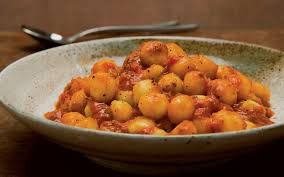
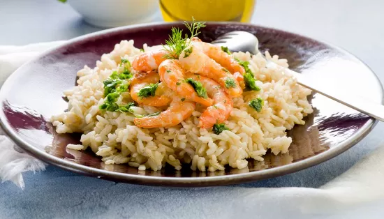
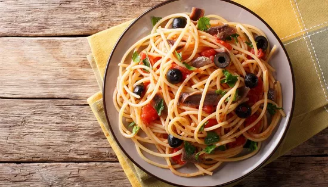
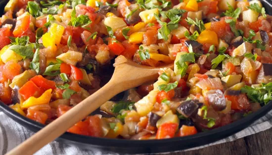
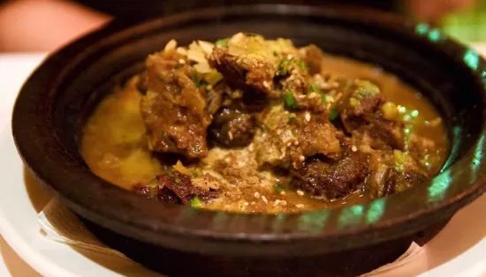
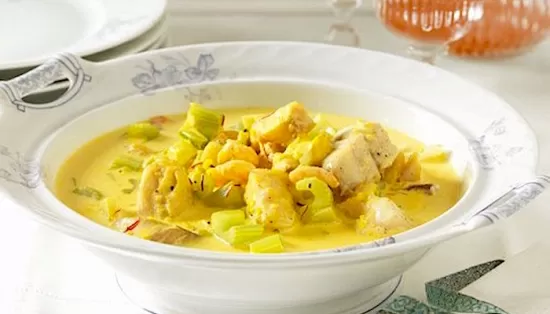
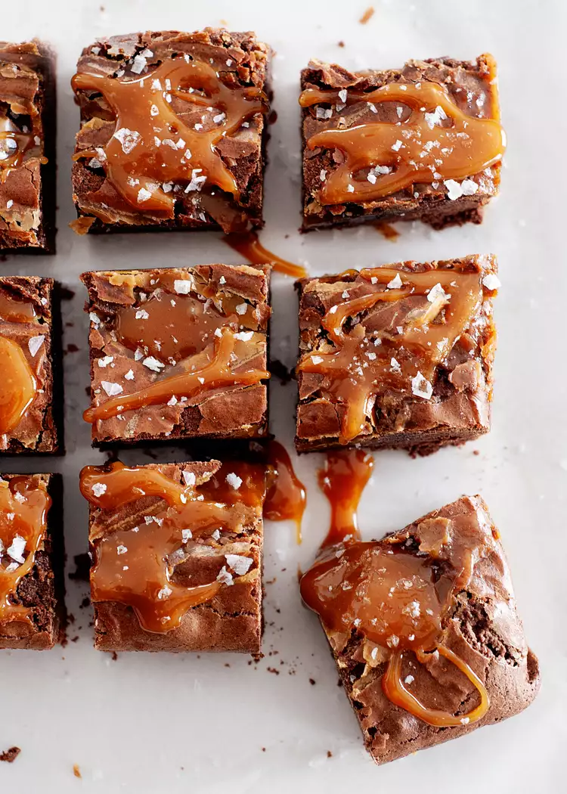
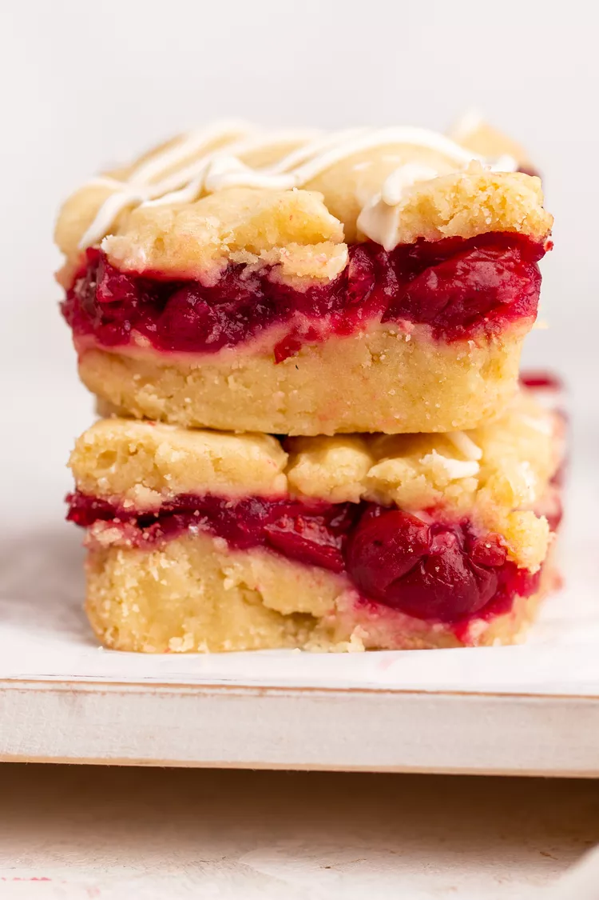
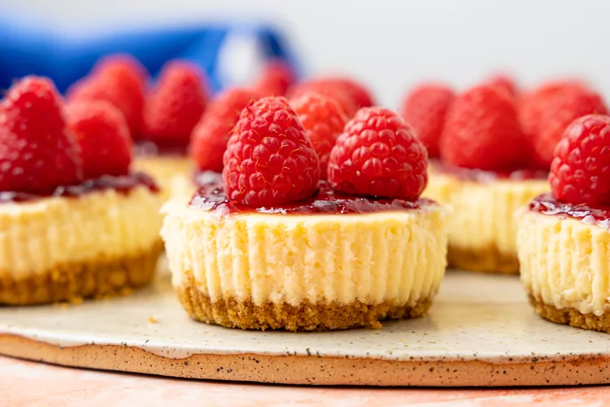

ODIN RECIPES

Recipes Quick & Easy In The Kitchen Table Talk Holiday & Seasons About Us
Buonissimi, divertenti da preparare e succulenti da mangiare: sono gli gnocchi di patate. Oltre a essere un piatto ricco, buono e nutriente, mettono anche di buonumore perché prepararli è una gioia che spesso coinvolge tutta la famiglia.
Un risotto raffinato che vi permetterà di creare un piatto gourmet direttamente a casa vostra. Il risotto agli spinaci con gamberetti e pomodorini ciliegia unisce sapori freschi e del mare con la cremosità e la consistenza avvolgente del risotto, per un'esperienza che conquisterà tutti i palati. Mettete il cappello da chef stellato e vi mostreremo come preparare questo piatto con passaggi semplici ma dall’effetto wow garantito, perfetto per stupire i vostri commensali in ogni occasione.
Ci sono ricette il cui sapore è dato non solo dal semplice e sapiente mix di ingredienti, ma anche dalle leggende che li accompagnano, come le fettuccine Alfredo, gli spaghetti alla Nerano, l'arrabbiata o la famosa puttanesca! Il sapore unico degli spaghetti alla puttanesca è dato dal sapido condimento che li avvolge: pomodori pelati, olive di Gaeta, capperi e filetti di alici. Ma è anche il nome insolito della pasta che lo rende ancora più sfizioso e desta curiosità rispetto alle sue origini, contese tra Lazio e Campania. Le storie più piccanti e fantasiose li vogliono nati negli ambienti delle case chiuse, come piatto velocissimo da preparare con pochi e semplici ingredienti. Altre lo farebbero risalire alle fantasie culinarie di Antonio De Curtis, in arte Totò. Altre ancora riconducono la prima forchettata di spaghetti alla puttanesca ad Ischia nel celebre locale Rangio Fellone intorno agli anni '50: qui una sera sarebbero stati preparati con quello che rimaneva in dispensa e il termine colorito indicherebbe proprio il tipo di preparazione improvvisata, facile e molto rapida. Da allora pare che sia entrato a far parte del menu del ristorante e si sia diffuso anche oltre l'isola come uno dei primi piatti della tradizione culinaria italiana.
La ratatouille è un tripudio di verdure, grazie a melanzane, pomodori e zucchine, un piatto che accomuna diversi principi in un solo momento: è infatti una ricetta tipicamente invernale, ma anche assolutamente dietetica e vegetariana. La Francia, patria di questa proposta, ha poi esportato diverse versioni della ratatouille, specie nella vicina Svizzera, che prevede l'utilizzo anche di altre verdure. Ma di varianti ne esistono tante, compresa questa sfiziosissima.
Lo stufato di carne e verdura è una preparazione svedese che prevede verdure come carote e cavolo cotte da parte rispetto alla carne. Uniti poi tutti gli ingredienti questi verranno fatti cuocere in forno per circa un'ora. Da parte bollirete del riso che a termine della cottura della carne con le verdure verrà unito ad essa.
La zuppa di pesce si prepara tagliando a cubetti il pesce mentre peleremo i gambi di sedano per tagliarli a tocchetti e porremo il tutto in un tegame a rosolare per pochi minuti aggiungendo poi il vino e la panna. Al termine, dopo aver aggiustato di sale e pepe, serviremo.
Arrenditi alla tua voglia di cioccolato e prepara questi brownies fondenti al caramello conditi con scaglie di sale marino. Sarai felice di averlo fatto! Potresti essere tentato di tenere un dessert così delizioso tutto per te, ma i brownies al caramello sono un piacere per il pubblico per eccellenza! Prepara alcuni lotti da condividere come regali di San Valentino per i tuoi cari, confezionali per una vendita di dolci o servili a una festa di compleanno. Chi dice che è la torta ad avere tutto il divertimento?
La torta di ciliegie è un alimento base dell'estate, ma prepararla è un compito noioso. Queste barrette di torta di ciliegie ti regalano tutta la deliziosa e burrosa dolcezza di una torta di ciliegie ma senza complicazioni. Sono molto più facili da affettare e servire e non è necessaria la forchetta, il che li rende un delizioso dessert per una cena o un barbecue estivo. Questa semplice ricetta è anche indulgente: usa ciliegie dolci o aspre, fresche o congelate, oppure scambia con il ripieno di torta acquistato in negozio. Puoi anche scambiare del tutto il frutto per dargli il tuo tocco personale. La crosta burrosa funge anche da copertura sbriciolata e una glassa opzionale lo fa sembrare elegante.
I mini dessert a volte hanno una cattiva reputazione. Possono essere visti come ingannevoli o come “minori” rispetto agli originali a grandezza naturale che replicano. Non è così con queste mini cheesecake! Conquisteranno chiunque si trovi dalla parte sbagliata del dibattito sui mini dessert. Non c'è modo di compromettere la consistenza liscia e cremosa o il sapore abbastanza dolce e piccante dell'originale, e questi possono essere conditi su o giù proprio come qualsiasi altra cheesecake semplice. A differenza di una cheesecake intera, le mini cheesecake sono ancora più facili da preparare (non è necessario il bagnomaria!), conservare, viaggiare e condividere.
© 2024 The Recipesingga Project. All rights reserved.